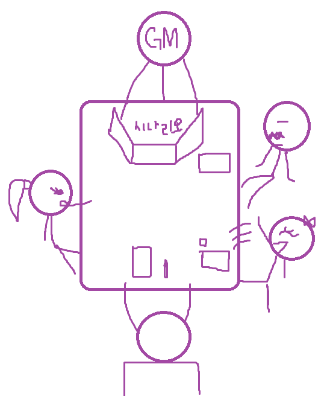
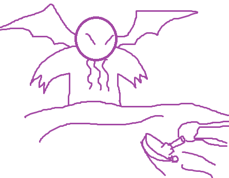
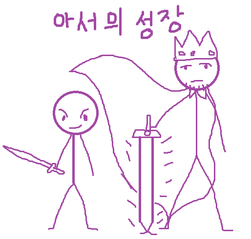

마스터링 가이드
PL은 알아도 되고 몰라도 되지만 마스터라면 반드시 알아둬야 좋은 요소들을 모아둔 페이지입니다.
게임 준비
게임을 즐기려면 먼저 게임 준비를 해야 합니다. 게임을 하기 위해서 필요한 가장 중요한 4가지 요소는 사람과 장소, 시간, 시나리오입니다. 여기서 시나리오는 정통적인 방법으로 사람과 장소를 정하기 전에 GM이 준비해 두어도 되지만 라이서스의 가벼움과 범용성을 장점 삼아 사람과 장소를 먼저 정한 뒤 즉석으로 만들어도 됩니다. 대개 전자의 경우 시나리오의 길이를 미리 알고 있겠지만 후자의 경우 힘들겠지요.

시나리오는 배경, 목표, 적, 스타일 등을 정해야 할것인데 미리 준비한 경우 아마 해당 시나리오를 해보고 싶은 플레이어들이 모인 경우겠지만 즉석으로 준비하는 경우엔 플레이어들과 의논을 하면서 모두가 원하는 방향으로 설정하는 것이 좋을 것입니다.
캐릭터의 성장
이야기가 진행 되면서 캐릭터는 성장을 합니다. 기본적으로 각 캐릭터는 매 세션이나 이야기의 한 분기가 끝날때마다 CD를 1점씩 받고 캐릭터 만들기 때 했던 식으로 투자가 가능합니다. 현재 가지고 있는 클리셰를 높이거나, 새로운 클리셰를 만들거나, 혹은 치트키에 투자할 수도 있습니다. 또한 CD 1점당 나쁜 클리셰를 1점씩 없앨 수 있습니다. 고난을 겪으며 자신의 단점을 고쳐나간 것이지요. 성장 주기는 시나리오의 크기에 따라서 정하는 것이 좋습니다. 한 세션 만에 끝날 것이라면 성장이 없거나 각 장면별로, 몇 세션 만에 끝날 단기 플레이는 각 세션마다, 긴 시간을 걸쳐 하는 중장기 플레이는 3세션에 한 번씩 등....
드라마틱 시스템
시나리오를 준비하기 이전에 본 드라마틱 시스템 3개와 후에 언급할 클리셰의 고찰에 대해 이해해두면 더욱 쉬울 것입니다. 이는 시나리오의 종류마다 게임을 다른 느낌으로바꾸는 것과 각 캐릭터의 차이, 밸런스 등을 다룹니다.
드라마 포인트
드라마 포인트(DP)는 캐릭터가 좀 더 극적인 실력을 발휘할 수 있게 받을 수 있는 요소로 각 캐릭터마다 매 세션 3점을 받습니다. DP는 언제든지 1점씩 소모해서 특수한 힘을 발휘하는데, 이는 아래와 같습니다. 원한다면 매 세션 받는 DP의 개수를 줄여서 개수당 CD 1점을 더 받을 수 있습니다. DP는 조연을 위해 사용 가능.
- 판정 전에 사용해 판정에 주사위 하나를 더함.
- 판정 후 사용해 재판정 가능.
- GM과 상의 해 이야기에 영향을 주는 요소를 만든다.
앞서 소개한 드라마 포인트는 주연과 조연이 사용 가능한 것으로 각 주연은 기본적으로 세션당 3점을 받고 조연은 PL이나 GM이 자신의 DP를 대신 사용해줄 수 있습니다. GM은 세션에 참여하는 PC의 수 만큼 DP를 매 세션 받습니다. DP는 PL의 연기가 좋았다거나, 어떠한 재미있고 흥미로운 업적을 이루었다던가 하면 GM이 추가로 줄 수도 있습니다. DP는 매 세션 리셋되는 만큼(추가로 받은 것은 삭제) DP를 굳이 아끼지 말고 필요하다 싶을 때 바로 바로 사용하시길 권장합니다.
캐릭터의 중요도
PC든 NPC든 모든 캐릭터들은 각자 게임에서 맡는 극적인 역할이 있는데 그것을 단역, 조연, 주연 이 3가지로 나눕니다.
- 주연: 주연은 가장 빛나야만 하는 캐릭터로 PC와 시나리오 보스 등이 이에 해당 됩니다. 주연은 DP를 매 세션 3점을 받으며 다른 조연을 위해 사용할 수 있습니다. CD는 10이상입니다. 전투 시스템을 사용한다면 주연은 기본적으로 HP10을 가집니다.
- 조연: 조연은 사이드킥이나 주요 NPC 등 극의 주인공은 아니되 제법 비중있는 캐릭터들입니다. 조연은 자신만의 DP는 없으나 주연이 사용해줄 수가 있으며 CD는 5~10점 정도입니다. 전투 시스템을 사용하면 기본 HP는 5를 받습니다.
- 단역: 단역은 이름도 중요하지 않은, 그저 스쳐지나가는 존재입니다. CD는 1~4가 적당합니다. 단역은 DP의 효과를 못받으며 전투 시스템 사용시 HP는 1입니다.
완급조절
시나리오나 장르에 따라서 완급조절이 필요한 경우가 있습니다. 일반적으로 캐릭터 생성시 캐릭터 점수 10점을 받고 클리셰는 최대 4점까지만 찍을 수 있지만 이를 변경할 수 있습니다. 히어로물처럼 캐릭터들이 조금 더 강하고 유능해야 한다면 CD를 15점 주고 시작 최대치를 5점 이상, 그리고 클리쉐 최대치를 원래의 6점이 아닌 7점 이상으로 만들 수도 있습니다. 혹은 코스믹 호러처럼 등장인물들의 능력이 미약한 수준일 경우 CD를 5~7점 정도로 줄이고 시작 최대치랑 클리쉐 최대치도 더 낮게 조절이 가능합니다.
위와 같이 캐릭터 만들기와 클리셰에서 제한을 두는 방법도 있지만 게임 내적인 요소로 완급 조절도 가능한데, 바로 더블펌프와 옵션룰인 코미디 법칙 등의 사용 빈도수 입니다.
클리셰 고찰
아이디어 참조: Risusverse여러분은 클리셰를 단지 판정에 수정치를 주는 능력치 같은 개념으로 여길 수도 있습니다. 다만 클리셰는 우리가 흔히 아는 근력/민첩/지능.... 등의 고정된 능력치와는 현저히 다릅니다. 클리셰는 살아있는 생명체처럼 유동적으로 변경이 가능하고 그럼에 따라서 가능하고 불가능한 일이 나뉘어지고 캐릭터가 하는 행동의 난이도가 틀려집니다. 때에 따라서는 '전설의 총잡이(1)'이 비록 1점이지만 '뒷골목 총잡이(3)'보다 훨씬 유용할 수 있습니다.기본 규칙에도 명시되었듯이 각 판정이나 대결마다 적절하냐 부적절하냐가 나뉘어지고 그에 따라서 난이도도 바뀌니까요.
이러한 클리세의 유동성에 대한 예시로는 공포물이 있습니다. 공포물이나 여타 정신력 같은 것이 필요한 타입의 시나리오는 옵션룰 중 정신력 규칙 같은 것을 사용할 수도 있겠지만 사실 라이서스는 떠오른 이야기를 즉석에서 바로 간단히 휙휙 해버리는 것에 중점을 맞춘 시스템입니다. 복잡한 시스템으로 하고 싶다면 CoC 같은 유명한 룰북이 있습니다. 여러 라이서스 이용자들의 라이서스에 맞는 정신력 시스템에 대한 토론이 벌여진 결과 그 중 가장 좋은 대답은 ‘클리셰 자체로 이미 공포나 정신력 같은 것을 표현이 가능하다’라는 것이었습니다.
라이서스의 대결엔 ‘승자가 패자의 결말을 정한다’라는 점과 ‘대결은 육체적, 사회적, 정신적을 떠나 두 개체나 세력의 대립관계를 표현하는 것’이라는 점이 있는데 이것만 생각하면 사실 공포의 표현은 간단한 것입니다. 공포 장르를 클리셰에 맞춰 설명하자면, 괴물의 무서운 모습과 캐릭터의 용기가 대결을 해서 캐릭터가 질 경우 괴물, 마스터가 캐릭터의 패배 결과를 표현합니다. 왜냐면 라이서스의 대결 결과는 사망이나 기절이 아닌, ‘상황과 대결 성향에 따른 적절한 결과'니까!
‘막 깨어난 별의 지배자 크툴루(7)’의 기괴함과 ‘아직 멀쩡한 용감한 선원(3)’의 약간 남은 깡이 대결을 하는데 결국 선원이 클리셰가 0으로 떨어지며 대결에서 패배하였다. 마스터는 선원의 플레이어에게 눈 앞이 캄캄해지고 후에 정신병원에서 깨어났다고 말해준다. 그리고 마스터는 PC의 클리셰를 '공포에 떠는 불우한 선원(3)'으로 변경합니다.
'골목대장(3)'의 클리셰를 가진 소년 아서 펜드래건은 대표장비로 '싸구려 목검'을 가지고 있습니다. 아서는 자신의 명성으로 여관에 무료로 머무는 판정을 TN10에 합니다. 후에 시나리오 막바지로 가며 그동안 큰 성장을 한 아서는 '최고의 기사(6)'이라는 클리셰를 가지고(대표장비는 엑스칼리버) 자신의 명성으로 여관에 무료로 머무르려고 하는데 GM은 자동성공이라고 칩니다. 클리셰가 3점 더 높은 것을 떠나서 대표장비가 바뀌고 같은 판정인데도 후자는 아예 판정 조차도 안하는 것입니다!
이렇게 클리셰를 잘만 사용하면 많은 것이 복잡한 옵션룰이나 하우르룰의 도움 없이도 간단히 해결 가능하니 클리셰에 숨결을 불어 넣어주세요. 공포감 외에도 캐릭터의 명예, 재산, 사랑 등 많은 추상적인 개념을 클리셰를 이용해 쉽게 풀어낼 수 있습니다.